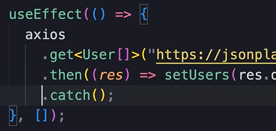
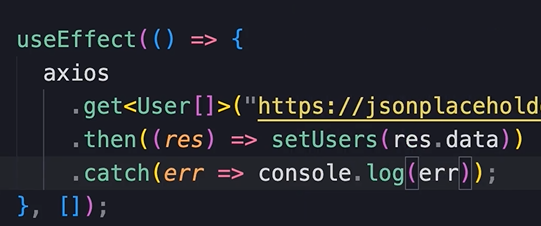
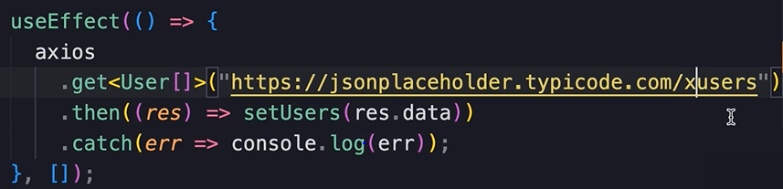
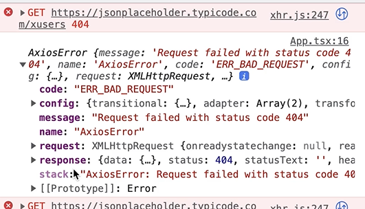
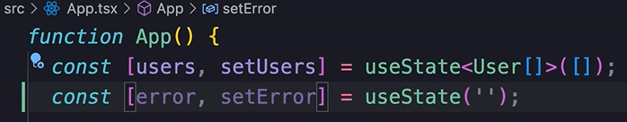
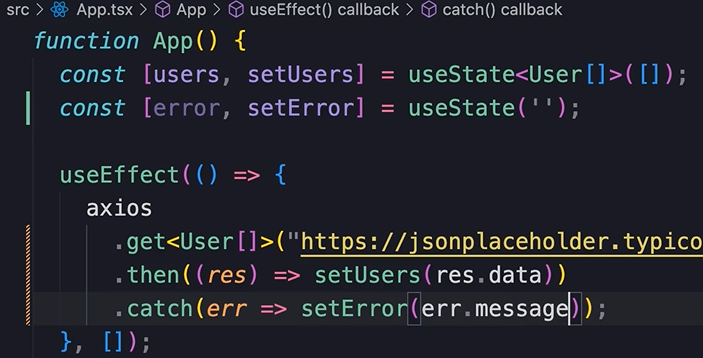
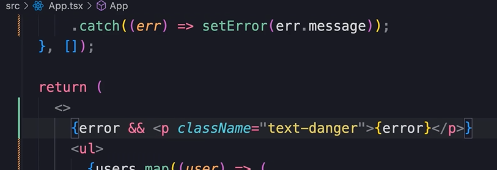

HOME
Handling Errors
Things can happen
While calling the server, many things can go wrong.
Perhaps the network connection is gonna drop out, or the server is
gonna go offline, whatever it is.
As a good dev, we should anticipate such problems, and handle errs
properly.
Catching errors
In JS, all promises have a method called 'catch' that we can use to
catch errors.
So right after a .then we call a .catch

We pass .catch a callback function.
That callback function will get called if there is a problem while
fetching the data.
The callback func should also take in an err obj. Let's just log the
err.

To simulate an err, just mess up the endpoint...

And we get tons of info about the err we have...

Display err msg on screen
Declare a state for our err...

Instead of console.log, set the err to the err.message...

Finally, render the error only if there is an error...

You should now see the error message displayed in the browser window.